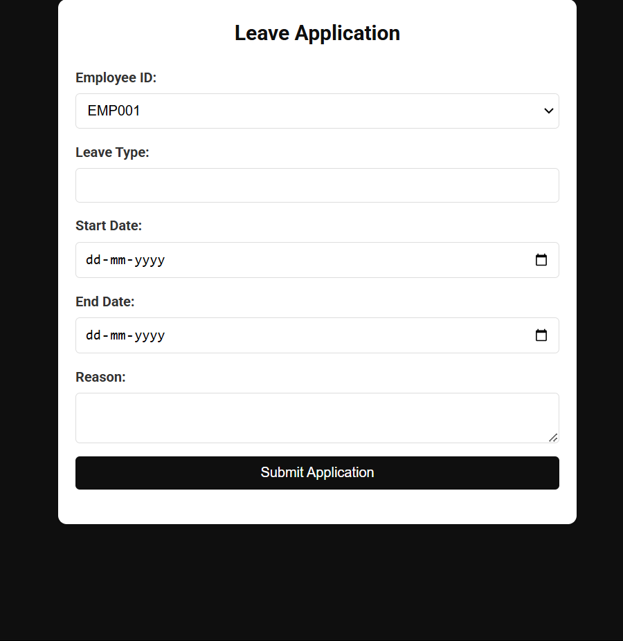

Overview
The Workforce Efficiency & Attendance System is built on Flask for the backend and utilizes computer vision for worker detection, zone monitoring, and trespassing alerts. It features facial recognition for automated attendance tracking, an employee self-service portal, and admin controls for managing records and sending notifications. The system also provides comprehensive data visualization and generates detailed reports in Excel and PDF formats.
Login & Admin Dashboard


The system provides a separate login for employees and admins with role-based access controls. It is built using Flask in the backend
Worker Detection

This part of the project utilizes the YOLOv8m object detection model to analyze recorded CCTV footage and identify persons (workers) in the video. The model processes each frame, detecting individuals and drawing bounding boxes around them. Above each bounding box, a confidence score (a floating-point value between 0 and 1) is displayed, representing the model's predicted probability that the detected object is a person.
Worker Count

This part of the project utilizes the YOLOv8m object detection model to analyze recorded CCTV footage and count the number of workers present in each frame. OpenCV is used to overlay the total worker count on the screen, updating dynamically as the number of detected workers changes in each frame. This implementation enables post-processing worker monitoring using object detection and computer vision techniques.
Trespassing Alerts
This project leverages the YOLOv8m object detection model to analyze recorded CCTV footage and monitor worker movement within a designated region of interest (ROI). A predefined ROI is set in the video, and OpenCV is used to track worker movement. If a detected worker crosses the ROI boundary, the system flags it as a trespassing event. This implementation enables automated surveillance and security monitoring by integrating object detection with region-based rule enforcement.
Overcrowding Alerts

This project utilizes the YOLOv8m object detection model to analyze recorded CCTV footage and monitor worker density within a designated region of interest (ROI). OpenCV is used to track the number of workers inside the ROI in real time. If the worker count exceeds a predefined overcrowding limit, the system displays an alert message: "Exceeds Limit." This implementation enables automated monitoring of workplace crowd density, ensuring compliance with safety regulations.
Data Visualization

This part of the project extracts employee details from an SQLite3 database, including total employees, monthly attendance, yearly attendance, age distribution, and gender distribution. The retrieved data is processed using NumPy and Pandas for analysis and transformation. Matplotlib is used to generate visual representations, such as bar graphs for attendance trends and pie charts for demographic distribution. This implementation provides an insightful overview of workforce statistics through data-driven visualization.
Shift Management
Shift Management System with Email Notifications This project allows administrators to manage employee shifts and send notifications through webpage built using Flask via email using Python's smtplib with a Gmail SMTP server. The system supports updating shift schedules, notifying employees of shift changes, and sending custom emails. Employee details, including email addresses, are stored and retrieved from a database (SQLite3 or similar). The system ensures secure authentication with Gmail’s SMTP and handles email formatting, subject lines, and body content dynamically. The page provides a simple interface for admins to select employees, update shifts, and trigger email notifications in real-time.
Report Generation
This project automates the generation of employee data reports by fetching records from a database, visualizing key metrics such as monthly attendance trends, gender distribution, and age demographics, and compiling them into a structured PDF report using ReportLab. The system dynamically generates graphs with Matplotlib, embedding them within the PDF for clear insights. Additionally, it allows exporting employee data into a spreadsheet format for further analysis. Built with Flask, the application provides an efficient way to generate and download reports while implementing robust error handling to ensure reliability and smooth performance.
Employee Self-Service
Employees can access their records, update personal details, and request changes using the webpage.
Performance Reviews

The managers and admins can upload their employees performance reviews into the database and employees can retrieve from the page.
Face Recognition based attendance system
This project automates worker attendance using face recognition and a PyQt5 GUI. It captures real-time video, detects faces, and matches them with pre-stored images. Recognized workers are logged into an SQLite3 database with timestamps, preventing duplicate entries for the same day. The PyQt5 interface displays the live webcam feed, attendance table, and total recognized workers. The system uses OpenCV, face_recognition, and NumPy for face detection, and PyQt5 for UI.
Leave Applications
Employees can apply for leaves, and managers can approve/reject requests via the webpage. The information is all updated to the SQLite3 database